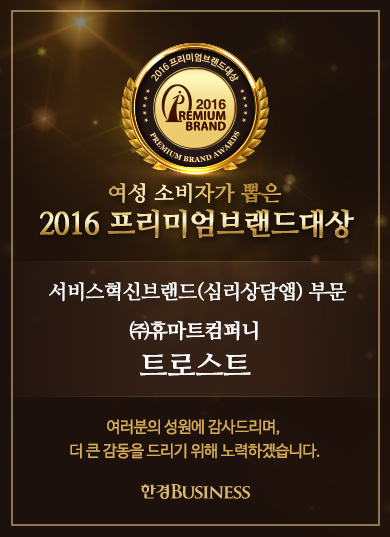

민족 대명절 추석을 맞아 트로스트가 텍스트 테라피 50분 상담권에 사용 가능한 15,000원 할인 쿠폰을 전 고객님께 쏩니다!
발급된 쿠폰은 쿠폰함에서 확인 가능하며, 상담사 선택 후 결제페이지에서 적용 가능합니다.
(미가입자는 가입 시 즉시 발급)
쿠폰 적용 시 텍스트 테라피 30분 전문 상담권(정가 30,000원)과 같은 금액에 텍스트 테라피 50분 전문 상담권(정가 45,000원)을 받으실 수 있으니 명절 스트레스 찾아가지 말고
집에서 빠르고 쉽게 풀어보세요!
쿠폰은 10월 9일까지 유효하면 10월 9일 자정 이후에 소멸합니다.
꼭! 유효기간을 확인하시고, 특별 할인가에 상담받아보세요.
* 2017. 09. 30 (토) ~ 2017. 10. 06 (금) 결제 건에 대해서는 모든 상품에 대해 상담 가능 기간을 자동으로 4일 연장해드립니다.
<추석 기간 트로스트 운영 안내>
2017년 대체 공휴일을 포함한 추석 연휴 (2017.10.02~2017.10.06) 동안 트로스트 운영에 대해 안내드립니다.
1. 추석인 10월 3일~5일 고객센터 운영 중지
추석 기간은 고객센터가 운영되지 않습니다. 접수하신 내용에 대해서는 6일부터 순차적으로 답변드리겠습니다.
2. 대체 공휴일인 2일, 6일 고객센터 주말/공휴일 운영
대체 공휴일인 2일과 6일에는 주말의 고객센터 운영시간인 오후 1시~오후 6시에 고객센터가 운영되게 됩니다.
3. 한글날인 10월 9일은 정상 운영됩니다.
마음 따뜻하고 풍요로운 명절 보내시기 바랍니다.
감사합니다.
안녕하세요. 심리상담 메신저, 트로스트입니다.
언제나 트로스트를 사람해주시고, 이용해주셔서 감사합니다.
2017년 10월 6일(금)부터 트로스트 이용약관 개정, 2017년 10월 3일(화)부터 개인정보처리방침 개정 변경됨을 안내드립니다.
이용약관 개정 내용 요약
제 4조의 약관 내 사용 용어가 수정되었습니다.
제 7조, 13조, 16조에 신규 서비스 업데이트관련 내용이 추가되었습니다.
제 12조 상담사에 대한 표기가 수정되었습니다.
제 20조 항목이 추가되었습니다.
-> 이용약관 확인하기
개인정보 처리방침 개정 내용 요약
2항에 네이버 로그인으로 인해 수집되는 개인정보 항목이 추가되었습니다.
2항에 상담 접수지로 인해 수집되는 개인정보 항목이 추가되었습니다.
5항에 개인정보 처리 위탁 대상에 제휴된 심리상담사와 결제 시스템 내용 표기가 수정되었습니다.
-> 개인정보 처리방침 확인하기
당사 공지사항에 안내된 바와 같이 개정된 이용 약관은 2017년 10월 06일(금)부터, 개인정보 처리방침은 2017년 10월 03일(화)부터 효력이 발생합니다.
개정 내용에 동의하지 않을 경우 회원탈퇴를 요청하실 수 있으며, 개정 후 30일 이내 별도의 이의를 제기하지 않으실 경우 개정 약관 및 개인정보 처리방침에 동의한 것으로
간주합니다.
트로스트의 더 나은 앱 서비스를 위해
안드로이드 젤리빈 4.3 이하 버전 /
아이폰 5S 기기와 OS 9.1 이하 버전 지원을 중단하게 되었습니다.
지원 중단에 관한 자세한 내용은 아래와 같습니다.
종료 일자 : 2017년 08월 18일 금요일
종료 내용 : 하단 기기 및 버전 지원 중단
- (1) '안드로이드 젤리빈 2.3 이하 버전’
- (2) '아이폰 5S 기기 / OS 9.1 이하 버전’
종료 시점 이후 해당 지원 스펙 이하의 기기 사용자 분들은
서비스 자체를 이용하지 못합니다.
그 이상의 기기 사용자분들은 Android 젤리빈 4.3 / iOS 9.1 버전으로
업데이트를 해주셔야 서비스를 이용할 수 있습니다.
*아이폰 업데이트 가이드 : https://support.apple.com/ko-kr/HT204204
*안드로이드 업데이트 가이드 :https://support.google.com/nexus/answer/4457705?hl=ko
기존 결제자 분들은 웹에서 더 편하게 상담을 받을 수 있습니다.
추가 결제 또는 이용 문의는 'develop@hu-mart.com' 으로 메일 주시면 도움 드리겠습니다.
아쉬움을 드려 죄송하고,
더 나은 서비스로 보답하도록 하겠습니다.
트로스트 개발팀 드림
안녕하세요, 심리상담 메신저 트로스트입니다.
덥고 습한 여름에 마음 속 화로 더 더운 여름입니다.
매년 반복되는 계절처럼, 내 안의 부정적인 마음들도 되풀이되는 것 같습니다. 용기를 내어 앞으로 나아가다가도 어느새 다시 제자리로 돌아와 똑같은 실수를 하기도 하는데요.
충분한 상담을 통해 근본적으로 내면의 상처를 회복하고 자존감을 높일 수 있도록,
트로스트가 그 여정을 응원하고자 이벤트를 준비하였습니다.
* 이벤트 상품: 텍스트 테라피 4주 프로그램
* 이벤트 내용: 도서 증정
* 이벤트 도서: ‘당신은 아무 일 없던 사람보다 강합니다 – 김창옥 저’
* 참여 방법: 텍스트 테라피 4주 프로그램을 결제하신 후 상담방 내 설문지 링크로 배송지 정보를 입력해주시면 도서를 보내 드립니다.(최대 7일 내 수령 가능)
* 기타사항: 소지하고 계신 쿠폰이 있다면 추가 할인 또한 가능하니 쿠폰함을 확인하여 주시기 바랍니다.
* 본 행사내용은 도서 수량에 따라 변경 또는 중단될 수 있습니다.
================================================
<책 소개>
당신은 아무 일 없던 사람보다 강합니다 - 김창옥 저
‘삶이 권태로울 때, 뭘 해도 행복하지 않을 때, 이제 그만두고 싶을 때,
하지만 진심은 진짜 제대로 한번 살아보고 싶을 때
이 책이 위로와 응원, 힘 있는 자극이 될 것이다’ - 교보문고 제공
※ 위 이벤트는 도서출판 수오서재의 협찬으로 진행됩니다. 트로스트 고객을 향한 수오서재의 위로와 응원에 감사드립니다.
<텍스트 테라피 4주 프로그램 더블 할인 이벤트>
[기간 연장] 1만원에 2만원 더 할인?! (이번이 마지막!)
<텍스트 테라피 4주 프로그램 더블 할인 이벤트>
안녕하세요, 심리상담 메신저 트로스트입니다.
지난 4주 프로그램에 대한 2만원 할인 쿠폰에 대해 높은 관심에 감사드리며,
이벤트 기간을 연장하여 ‘텍스트 테라피 4주 프로그램’을 기본 할인가에 추가로 적용 가능한 ‘20,000원 쿠폰’을 모든 분들께 발급해드렸습니다! (쿠폰함에서 확인
가능)
긴~ 호흡을 가지고, 자신의 고민에 대해 근본적인 접근까지! 심리검사와 함께 진행되는 4주간의 나만을 위한 시간을 가져보세요.
[ ‘텍스트 테라피 4주 프로그램’이란? ]
- 1회 50분간 상담사 선생님과 채팅으로 상담을 진행하며, 일주일에 한번씩 총 4주에 걸쳐서 진행되는 심리상담입니다.
- 심리검사가 포함되어 있어 표면적으로 드러나지 않은 문제까지 심도 있게 다룰 수 있습니다.
지금 바로 고민 맞춤형 상담사 선택 후 ‘텍스트 테라피 4주 프로그램’을 이용해보세요~
쿠폰은 ‘상담사 선택’ – ‘상담권 선택’ 후 적용하실 수 있습니다.
<주의 사항>
- 발급된 쿠폰은 2017년 7월 15일까지 사용 가능합니다.
- 텍스트 테라피 4주 프로그램에만 적용 가능한 쿠폰입니다.
- 상담권 결제시 쿠폰 사용을 통해 할인 혜택을 받으실 수 있습니다.
- 결제 완료 후엔 쿠폰 적용이 불가합니다.
- 본 행사내용은 변경 또는 중단될 수 있습니다.
감사합니다.
나만의 상담사를 찾는 가장 쉬운 방법!
심리상담 메신저, 트로스트
안녕하세요, 트로스트입니다.
2017년 설 연휴(2017.01.27.~2017.01.29.) 동안의 트로스트 운영에 대해 안내 드립니다.
1. 코디네이터(접수 상담) 운영 중단
위 기간 동안은 코디네이터 운영이 중단됩니다. 남겨주신 메시지는 연휴 후 1월 30일에 답변을 드립니다.※ 대체 공휴일인 1월 30일에는 정상 운영됩니다. (주말 및 공휴일 코디네이터
운영 시간: 오후 1시 ~ 오후 8시)
2. 상담 기간 연장 안내 위 기간 중 상담사 선택 및 이용권 결제는 가능합니다. 2017.01.23.(월)~2017.01.28.(토) 사이에 결제하신 상담권 중 텍스트 테라피 7일 권
이상, 전화상담 3회 권 이상의 경우 상담 기간을 자동으로 4일 연장해드렸습니다. 이 기간 동안에도 설 연휴로 인해 상담이 이루어지지 못하였을 경우, 상담사 선생님께 사전에 말씀해주신
경우에 한해 이용권 사용 기간을 연장해드립니다.
3. 기타 문의 기타 궁금하신 내용은 1:1 문의 카카오톡 플러스 친구 @트로스트 를 추가하신 후 문의하여 주시기 바랍니다.
마음 따뜻하고 편안한 명절 보내시기 바랍니다.
새해 복 많이 받으세요^^
안녕하세요, 트로스트입니다.
2016년 추석 연휴(2016.09.14.~2016.09.16.) 동안 트로스트 운영에 대해 안내 드립니다.
1. 코디네이터(접수 상담) 운영 중단
위 기간 동안은 코디네이터 운영이 중단됩니다. 남겨주신 메시지는 연휴 후 9월 17일에 답변 을 드립니다.
2. 상담 기간 연장 안내
위 기간 중 상담사 선택 및 이용권 결제는 가능합니다. 만약 추석 연휴로 인해 상담사 선생님과 상담 시간 예약이 어려우신 경우, 상담사 선생님께 말씀해주시면 이용권 사용 기간을 연장해
드립니다.
3. 기타 문의
기타 문의는 앱 내 설정 > 1:1문의를 이용하여 주시기 바랍니다.
마음 따뜻하고 편안한 명절 보내시기 바랍니다. 감사합니다.
트로스트가 준비한 쿨링랜덤박스 열고, 당신의 화도 풀자!
<누구든 지금 트로스트에서 쿨링랜덤박스 열고 당신의 마음속 화도 푸세요!>
*이벤트 내용:
(1) 트로스트 홈페이지 ‘쿨링랜덤박스’ 배너 클릭!
(2) ‘쿨링랜덤박스’ 열기
(3) 로그인만 하시면 신세계 백화점 10만 원 상품권에서 카카오톡 이모티콘까지 총 7가지 상품 중 무조건 1가지를 100% 증정해드립니다.
*이벤트 기간: 6.17(금) ~ 7.15(금)
화병 인구 11만 명...
직장인 중 90.18% 직장 생활 중 화병을 앓은 적이 있다고 응답하였다.
화병은 별일 아닌 듯 지나치기 쉽지만 심하면 고혈압이나 중풍 등과 같은 심혈관계 질환으로 발전할 수 있다. 특히나 중풍으로 입원한 환자들의 45%가 중풍을 일으킨 원인을
‘화병’으로 꼽았다.
상황을 바꿀 수 없다면... 그 화의 방향이 본인에게 가기 전에 자신의 내면을 들여다보고, 고유한 마음의 구조를 파악해 상황에 대한 새로운 시각을 가져보는 것이 어떨까요?
*추가 이벤트:
(1) 해당 이벤트 참가 후 쿨링랜덤박스 이벤트를 공유해주세요.
(2) 공유하신 URL을 프로모션 페이지 하단 공유 창에 공유해주시면 매일 오후 6시에 담당자 확인 후 쿨링랜덤박스를 하나 더! 드립니다.
주머니 속, 나만의 심리상담사
트로스트
트로스트를 이용해주신 많은 분들의 사랑과 관심 덕분에 지난 6월 9일 트로스트가 심리상담 관련 서비스 중에서 최초로 한경Business가 주최하는 ‘여성 소비자가 뽑은 <2016 프리미엄
브랜드 대상>’을 수상하게 되었습니다.
<관련 기사>
[2016 프리미엄브랜드대상] 트로스트, 심리상담을 문자로 쉽고 빠르게

트로스트가 6월 9일 서울 강남 라마다호텔에서 열린 여성소비자가 뽑은 ‘2016 프리미엄브랜드 대상’ 시상식에서 서비스혁신브랜드(심리상담앱) 부문 대상을 받았다.
(주)휴마트컴퍼니의 서비스인 트로스트는 메신저를 통해 심리 상담을 진행하는 서비스를 도입한 심리 상담 애플리케이션(앱) 브랜드다.
이 서비스는 텍스트 테라피라고 부르며 전문 심리상담사와 자유롭게 문자를 주고받으면서 진행되는 심리 치유 서비스다. 메신저에서 익명으로 상담이 진행되기 때문에 이용자의 심리적
부담감을 줄여줄 수 있다.
상담 내용은 본인과 전문 상담사만이 확인할 수 있고 기록이 남지 않아 개인 정보 보안에도 안전하다. 익명성 보장과 부담감의 저하로 심리 상담에서 가장 중요한 마음속 이야기를
끌어내는 데 용이하다. 또 1급, 2급 상담 자격증을 가지고 있는 전문 상담사를 30명 보유하고 있다.
출처 : 2016.06.08. 한국경제매거진 / 한경비즈니스 1072호 p88, 96
이용자 여러분의 사랑에 정말 감사드리며 <2016 프리미엄브랜드 대상> 수상을 기념하여 “텍스트 테라피 전 상품 10% 할인 쿠폰”을 트로스트에 가입하신 모든 분들에게 100%
지급하였으니 쿠폰함을 확인하여 주시기 바랍니다.
언제나 당신의 일상을 함께하는 트로스트가 되겠습니다.
주머니 속 나만의 심리상담사, 트로스트 올림
트로스트 가정의 달, 무료 심리상담 이벤트
<당신과 가족에게 진짜 위로, 응원을 선물하세요:)>
*이벤트 내용: (1)트로스트 앱 상담하기 입장,
(2) 대화창에“무료상담“ 입력할 경우,
(3) 무료심리상담 이용권 쿠폰 증정
*이벤트 기간: 5.6(금) ~ 5.31(화)
*무료상담 구성: 24시간 이내,
전문 심리상담사와 실시간 상담 1회 가능(30분)
*트로스트는 유료 서비스로써, 청소년 분들의 경우,
국가 무료 지원 상담센터 1388을 안내해드리고 있습니다.
트로스트 서비스 5개월째,
전체 약 13,000명의 이용자 중 가정문제 45%
그들이 공통적으로 말했던...이야기..
"너무나 사랑하는 가족이기에, 부담조차 주기 싫어 말할 수 없었다."
말 못하고 묵묵히 이겨내고 있는 우리네 아버지, 어머니, 그리고 자식들.....
가정의 달을 맞아,
사랑하는 가족에게 진짜 마음의 힘을 얻는 시간을 추천해 보시는 건 어떨까요?
누구든, 어떤 이야기든 좋습니다.
트로스트에 오셔서, 대화창에 "무료심리상담" 이라고 이야기하세요.
트로스트 코디네이터가 도와드립니다.
<+특별선물>
무료상담을 받으신 분들 중 추첨을 통해 카카오톡 이모티콘을 드립니다 (100명 추첨)
당첨자 발표 : 트로스트앱 내 개별 통보
당첨 발표일 : 2016. 6.3 (금)
주머니 속 당신의 심리상담사. 트로스트
안녕하세요, 심리상담 메신저 트로스트입니다.
다음은 제휴 기관 회원을 위한 인증 절차 안내입니다.
제휴 기관 회원이 아닌 일반 사용자 분들은 읽지 않으셔도 괜찮습니다.
<제휴 기관 회원을 위한 인증 절차 안내>
트로스트 앱 설치 > 회원가입/로그인 > 더보기 탭 가기 > 제휴기관 회원 인증 > 정보 인증 > 상담사 선택 > 상담 진행하기!
어려운 점이 있으시다면 언제든지 더보기 > 고객센터 > 문의하기를 통해 말씀해주시기 바랍니다.^^